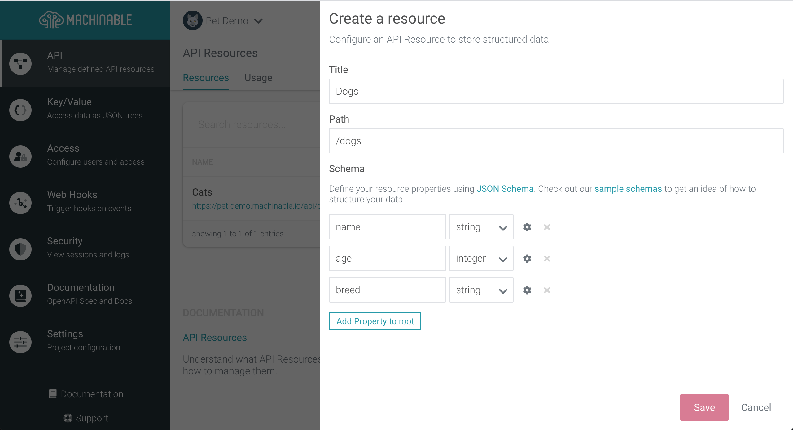
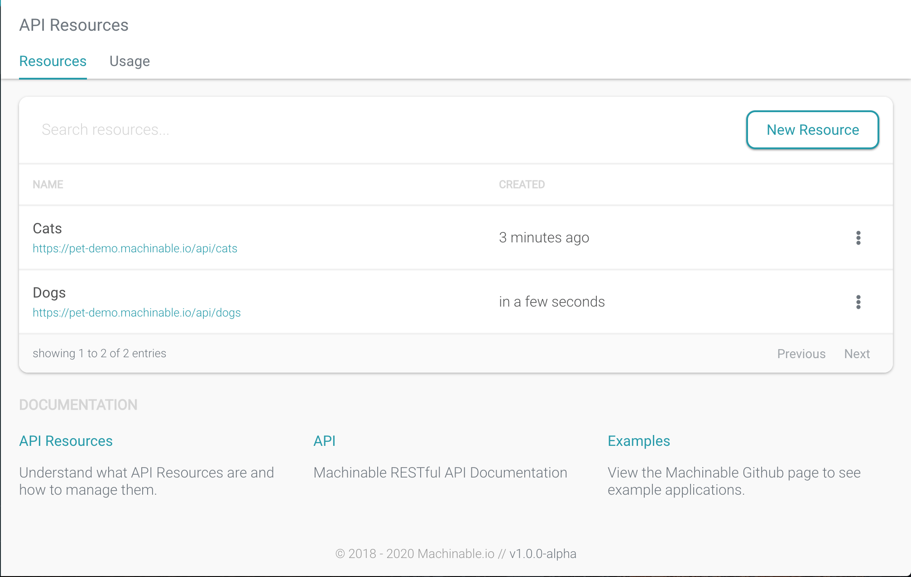
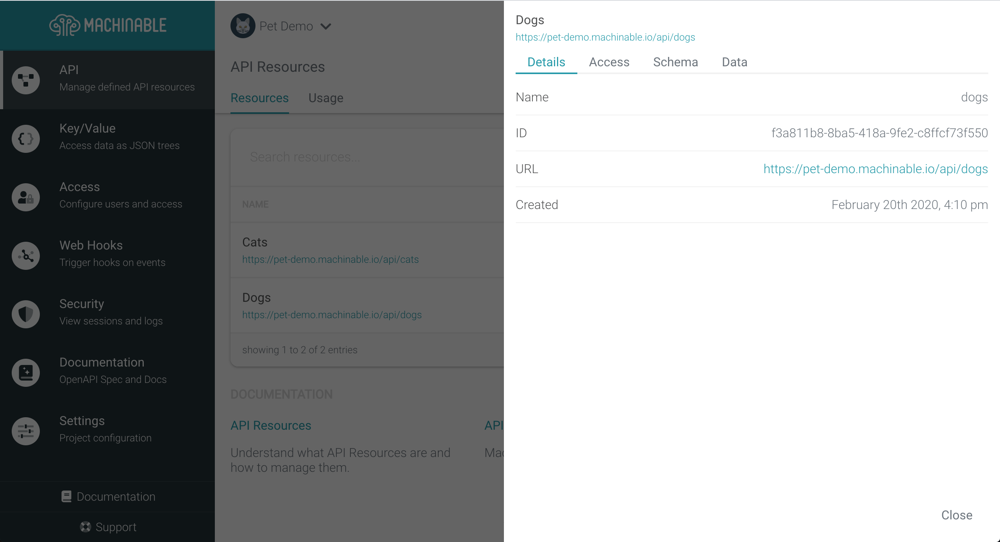
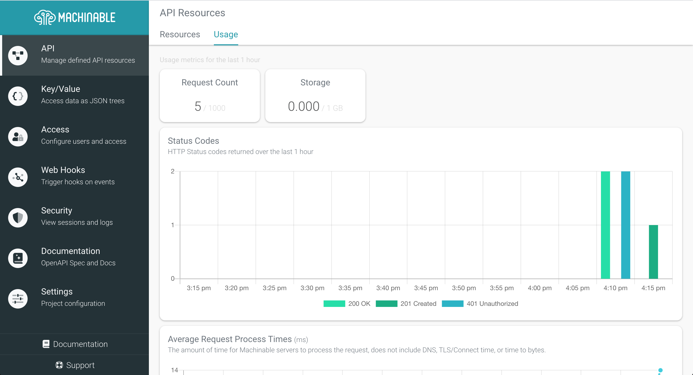

API Resources¶
API Resources are endpoints which store JSON Objects that are described and validated by JSON Schema. This gives you the ability to create API endpoints that will validate the data being saved to it without writing any code.
Manage Resources¶
Create a new API Resource¶
To create a new API Resource, navigate to your Project's API page and click the New Resource button. We will create a Dogs resource in our Pet Demo project.

Enter the following information into the New Resource fields:
Title
1 | Dogs |
Path
1 | /dogs |
Schema
1 2 3 4 5 6 7 8 9 10 11 12 13 14 15 16 17 18 19 20 21 22 23 24 25 26 27 28 29 30 31 32 33 | { "type": "object", "properties": { "age": { "description": "The age of the dogs.", "maximum": 50, "minimum": 0, "type": "integer" }, "breed": { "enum": [ "lab", "bulldog", "retriever", "hound", "mut", "other" ], "type": "string" }, "name": { "description": "The name of the dog.", "maxLength": 32, "minLength": 0, "type": "string" } }, "required": [ "name", "breed", "age" ] } |
The resource schema can be configured with the JSON Schema Builder form.
Note
Machinable supports a subset of JSON schema dictated by the form.
Click Save to save the new Dogs API Resource. Once the Resource is created, you can immediately start Creating and Querying data
View Details¶
To view the details of an API Resource, click the ellipsis button and select More.

This will open a modal with the details of the selected API Resource:

Details
Displays helpful information regarding the API Resource including the name, ID, and URL to the Resource's data.
Access
This tab provides access configuration for the specific resource. To learn more about these options, skip ahead to Configure Access
Schema
This section shows the configured JSON Schema that describes the data for this API Resource. These are not editable.
Data
Lists the data stored within this API Resource as a paginated list that can be traversed.
Configure Access¶
By default, Project Users & API Keys with a "User" role will only have access to their data (i.e. objects that have been created by a User/API Key can only be accessed by that User/API Key). This is based on the Machinable managed _metadata object that is stored and returned within each object.
Note
Users/API Keys with the role of "Admin" will have access to all API Resource data, based on that "User/API Key" access policy.
This access can be changed on a per API Resource basis by enabling the access fields:
Create
Authentication is required to create new objects.
Read
Anyone with the project URL can read objects.
Update
Authentication is required to update objects.
Delete
Authentication is required to delete objects.
Parallel Read
When enabled, any User/API Key can read (Get, List) any object, regardless of who/what created it. Disabled by default.
Parallel Write
When enabled, any User/API Key can write (Update, Delete) any object, regardless of who/what created it. Disabled by default.
Querying Data¶
Refer to the Querying documentation to see detailed examples regarding how to query for API Resource and Collection data. The examples in the Querying documentation use a Collection but can be interchanged with the API Resource defined above.
Possible Errors¶
API Resources and Collections may return the following error status codes.
| Status Code | Description |
|---|---|
400 Bad Request |
A field is missing or is of the wrong data type based on the JSON Schema for the Resource |
401 Unauthorized |
Missing or invalid authorization header |
403 Forbidden |
The requester is not allowed to access the resource |
404 Not Found |
The resource or object does not exist |
500 Internal Server Error |
An unknown error occurred, try again later |
Usage¶
Usage metrics are gathered for any requests made to API Resources. You can view your project's usage metrics by navigating to API > Usage.

Usage reports the following metrics:
Requests
This is the count of HTTP Requests made to all of the Resource endpoints in the last 1 hour.
Storage
Storage is distributed across 2 visualizations. The first is the total space in MB used by Resource data. The second is a table showing the amount of space, in MB, each resource is using.
Status Codes
This visualizes the count of status codes of each request to API Resources, summarized every 5 minutes, for the past 1 hour.
Average Response Times
This visualizes the response times of each request to API Resources, averaged every 5 minutes, for the past 1 hour.